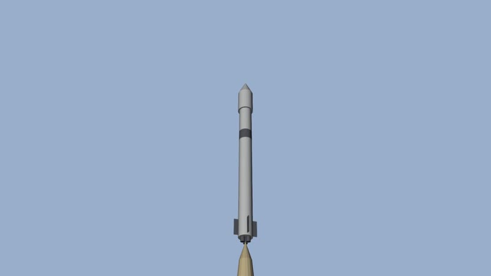
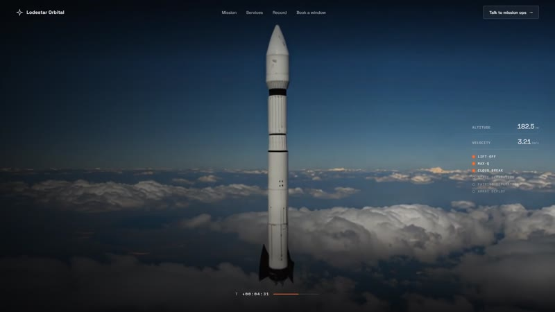

this is a blockout
.
Blender
Grey boxes
Grey boxes · a camera path
Before · Blender blockout
After
· LTX-2.3 film
same camera.
same timing.
rendered locally
with
ltx-2.3.
Blender depth › LTX-2.3 · no API keys
01 — AI film
then it scrolls.
the film is scrubbed by your scroll. mission hud included.
01
02
03
made three ways.
ai film.
real art, drawn live.
live 3d.
02 — Real art, drawn live
the mona lisa, built as you scroll.
guides › charcoal › graphite › umber › glaze. from the real painting.
03 — Live 3D
tissue to molecule, in one scroll.
100 µm › 0.3 nm
Six orders of magnitude · three.js
How it works

01
blender blockout
Grey boxes · log-depth pass
02
z-image keyframes
8-step · depth controlnet
03
ltx-2.3 film
22B · depth-guided IC-LoRA

04
scroll site
Scrub · WebGL · three.js
one rtx 4090.
no api keys.
scroll studio
github.com/Okohedeki/scroll-studio
scroll-driven sites · local ai film · no api keys